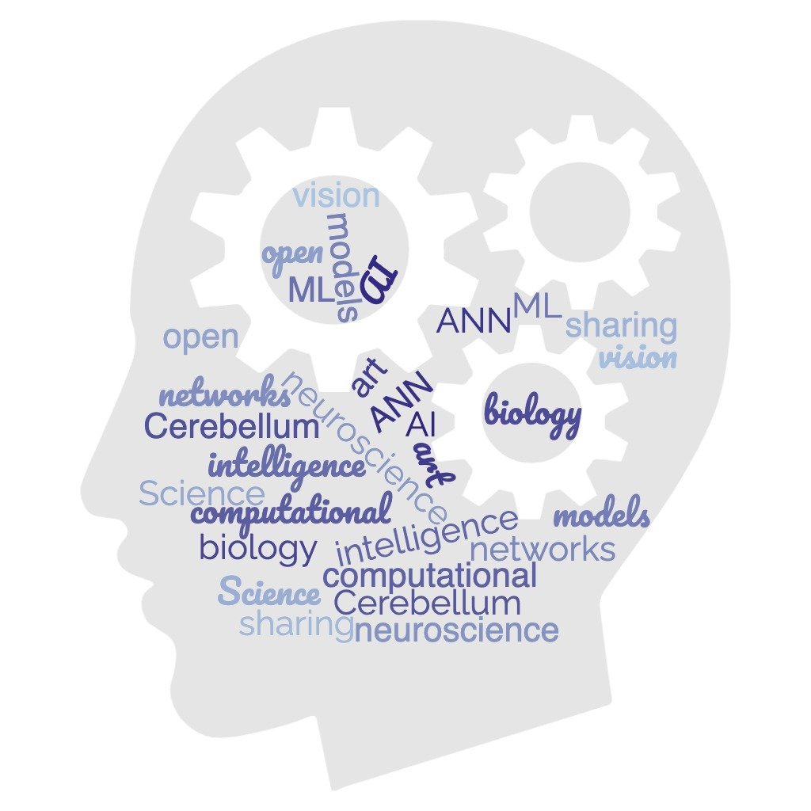

 Discover the dynamic world of CLANN (Cerebellum-Like Artificial Neural Networks). Our group actively engages in diverse activities including knowledge sharing, workshops, publications, and more. We foster a collaborative environment where experts and enthusiasts gather to exchange ideas and stay at the forefront of cerebellum-inspired artificial neural networks. With a focus on awareness, we participate in conferences and exhibitions to showcase our research. Through workshops, we equip individuals with practical skills, while our publications contribute to scientific understanding. Join us on this exciting journey as we explore the potential of CLANN in advancing artificial intelligence.
| Name | Description | Date |
|---|---|---|
| Virtual meetings | Organization, presentation to calls, sharing documents | Jaunary 2022 |
| Satellite meeting FEN forum | Vis ac commodo adipiscing arcu aliquet. | July 2022 |
| Hybrid meeting | Morbi faucibus arcu accumsan lorem. | October 2022 |
| Paper publication | https://doi.org/10.1101/2022.12.30.522292 | July 2023 |
| Sharing Knowdlege Session | Ante turpis integer aliquet porttitor. | July 2023 |
| Paper publication | Vitae integer tempus condimentum. | 2023 |